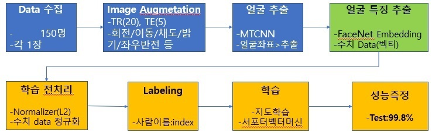

개요
- 안면인식 + 동작감지 = (비접촉) 출석체크
안면인식과 동작감지 기술을 이용하여 비 접촉 출석체크 시스템을 구현해보았다. 오픈소스의 대중화와 머신러닝 프레임워크의 발전, 그리고 AI 민주화시대를 앞당기는 기업들의 노력으로, 앞으로 이런 수준의 서비스들은 추가적인 연구없이 현재 공개되어 있는 기술들로 충분히 구현 가능하다.

Teachable Machine(2.0)
- https://teachablemachine.withgoogle.com/
- 일반인도 머신러닝 서비스를 만들수 있는 플랫폼을 제공(2019년/Google)
- 학습~배포(json/api)
- 관련 파생 서비스: 관상가양반(https://yourface.ga/)
- 단점: 세세한 튜닝(최적화) 불가능->안면인식 성능 낮음
안면인식 OpenSource
FaceApi
- Javascript 구현체(tensorflow.js + node.js)
- github : https://github.com/justadudewhohacks/face-api.js/
- 다양한 기능(face-tracking, recognition…) 내장하고 있지만 속도가 느림
Facenet(2015년/Google)
- Facenet: Embedding(백만명 사진 학습>특징 임베딩 벡터>98~99%)
- 블로그: https://machinelearningmastery.com/how-to-develop-a-face-recognition-system-using-facenet-in-keras-and-an-svm-classifier/
- 논문: https://arxiv.org/abs/1503.03832
시스템 구성/파이프라인
시스템 구성
작업절차: 안면인식(keras)>동작인식(Teach)>두 모델 기능병합(HTML5,JS)>배포(Docker/Flask)
Face Model(안면인식)은 Google Colab환경에서 학습하였다. Facenet 모델의 Embedding 벡터와 지도학습 방법인 서포터벡터머신(SVC)을 사용하여 얼굴예측 모델을 구현하여, 구현체를 H5(Keras 모델), Pickle(Skit-Learn 모델) 파일 형태로 출력한다. Pose Model(동작감지)은 Google Teachable Machine을 사용하여 팔의 동작(O,X,캡쳐,대기)을 학습시키고, 모델을 Json형태로 출력하였다.
서버에 설치는 Docker(Container 가상화 기술)를 사용하여 환경을 구성하였다. Docker를 사용하면 OS환경(Windows/Linux등)과 상관없이 개발환경 그대로 배포환경으로 옮길 수 있다는 장점이 있다. 또한 필요한 Library를 시스템 설치 없이 다운로드후 구동방식으로 동작 시킬 수 있기 때문에 개발 생산성도 좋아진다. Docker를 빌드하기 위해서는 yml 파일이나 Dockerfile이 필요한데, 여기서는 Dockerfile을 사용하였고 Base 이미지로 Keras(Tensorflow)/Flask 이미지 서버를 구성한 뒤, ML(Machine Learning) 출력파일을 올려서 컨테이너를 구성하였다.
배포서버의 도메인이 Https(Nginx) 로 구성되어 있어서, 웹서버(Nginx) 뒤에 WAS서버 형태로 시스템을 붙여야 했다. Flask ML 서버를 port를 분리하여 구동 시키고 Nginx의 URI 라우팅(Location 설정)을 수정하여 구성하였다. Flask는 Python 웹 애플리케이션 서버 역할을 하면서 동시에 웹서버(html, js 배포) 역할을 할 수 있기때문에, Flask 서버에 Html/Javascript 소스도 배포하였다. 이렇게 해서 화면단의 요청을 ML서버가 직접 받도록 구성하여 CORS(Cross-Origin Resource Sharing) 및 Https/Http 혼용사용 문제도 해결하였다.
활용기술
안면인식(FaceNet)
- 사진(150명) Agumentation > Embedding(특징벡터) > SVC(서포트벡터머신) > 예측
Facenet 모델은 기존 사람의 얼굴 윤곽을 잡아서 학습시키는 랜드마크 방식과 다르게, 사람 얼굴의 특정정보를 Embedding이라는 기하학적 공간에 사상시켜 훈련한데에 있다. 유명인 백만명을 학습시켜 Anchor 본인과 같은 사람의 사진이면 Positive로 보고 유클리드 공간상의 거리를 좁히고, 다른 사람이면 Negative로 보고 거리를 멀게 하도록 학습시키는 방식으로 Embedding 벡터를 훈련시켰다. 이 모델의 Embedding벡터를 사람 얼굴 특징 벡터로 Pre-Training 벡터로 사용하여 새로운 얼굴들을 추가 학습시키는 방법으로 활용 가능하다.
학습 절차

머신러닝 학습을 위해서는 여러 장의 사진이 필요하기 때문에, 사진을 복제/변형하여 추가(20장)로 훈련 데이터를 확보한다. 이후 얼굴추출 Library를 이용하여 좌표에 해당하는 이미지를 Slice한다. 이후 오픈소스로 존재하는 Facenet Embedding 벡터를 통과시켜 얼굴 특징점을 수치화한 Vector를 추출한 뒤 본격적인 학습과정이 수행된다. 수치 데이터의 분포가 일정하게 정규화 한 뒤, 사람별로 Labeling 과정을 거치고 지도학습 모델중의 하나인 서포터벡터머신(SVC)으로 훈련시켰다.
학습모델은 변경이 가능하고 딥러닝 모델을 사용하려면 사진 개수가 충분히 많아야 한다. 훈련Set 사진으로 학습시킨 뒤 테스트Set 사진으로 성능을 보면 99.8%로 거의 100%가깝게 나왔지만, 실제로 웹캠으로 시연을 해보면, 성능이 다소 떨어지는데 이는 사진이 현재 얼굴과 많이 다르거나, 웹캠의 해상도 조명등의 영향 때문인데 조명으로 인한 성능차이는 전처리 기능을 보강하여 추가 개선 가능하다.
- Embedding Feacture 추출소스(Facenet->predict)
1
2
3
4
5
6
7def get_embedding(model, face_pixels):
face_pixels = face_pixels.astype('float32')
mean, std = face_pixels.mean(), face_pixels.std()
face_pixels = (face_pixels - mean) / std
samples = expand_dims(face_pixels, axis=0)
yhat = model.predict(samples) # make prediction to get embedding
return yhat[0]
동작감지(Teachable Machine)
구글 Teachable Machine은 이미지/사운드/동작 이 세가지 학습방식을 지원하고, 일반인도 충분히 머신러닝 훈련 및 배포까지 가능한 환경을 제공하는 플랫폼이다. 이를 이용하여 팔의 동작 (O,X,캡쳐-두팔,대기)을 학습시켰다. 해당 플랫폼을 활용하여 만든 서비스 사례 중 하나가 ‘관상가 양반’(https://yourface.ga/)이다.
바야흐로 AI 민주화(democratization) 시대가 열리고 있다. 우리도 이제 발맞춰 민첩하게 대응하고 목표를 추진할 수 있는 인력양성이 필요한 시점인 것 같다.
Docker(Flask Web/ML Server)
- docker base img: https://hub.docker.com/repository/docker/jukyellow/keras-flask-img
- base img 생성방법: https://github.com/jukyellow/artificial-intelligence-study/tree/master/11_Serving/keras-flask-img
레퍼런스
- (Facenet + SVC 이미지 학습) https://machinelearningmastery.com/how-to-develop-a-face-recognition-system-using-facenet-in-keras-and-an-svm-classifier/
- (Facenet Pre-Train model) https://www.microsoft.com/en-us/research/project/ms-celeb-1m-challenge-recognizing-one-million-celebrities-real-world/
- (Jquery MultiPart-Form Ajax) https://mkyong.com/jquery/jquery-ajax-submit-a-multipart-form/
- (Google Teachable Machine) https://teachablemachine.withgoogle.com/